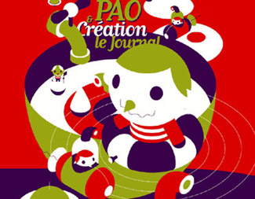
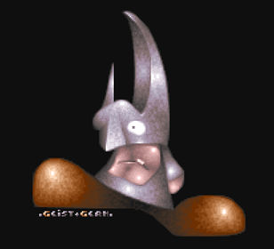
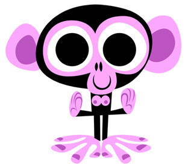
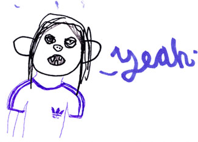

ОЙ, КАКИЕ ХОРОШЕНЬКИЕ!
Долой Пиктоплазму
Я считаю, фестиваль «Пиктоплазма» нужно запретить.
Нет, ничего нет плохого в том, что дизайн персонажей отпочковался в отдельный жанр и сподобился собственного фестиваля.
В иллюстрации грамотно придуманный персонаж – необычайно важная и полезная вещь, особенно если речь идет о серии; а в анимации и в комиксе – подавно; правильно подобранные персонажи – это половина сценария, они уже своей анатомией задают будущие попарные драматические столкновения и гэги (собственно, по Брокгаузу и Ефрону «сценарий» и есть список действующих лиц). В рекламе обаятельный и запоминающийся маскот может стоить десяти имиджевых кампаний.
Tino

При всем том персонаж – вещь сугубо прикладная. Дизайн персонажей – сродни скетчбуку: тоже, в общем-то, показывать публике не стоит. Пока персонаж не начал действовать, проку от него не больше, чем от тарталетки или от аформизма – И так же, как тем или другим, на «Пиктоплазме» персонажами почти мгновенно объедаешься до икоты.
Geist-Germ

По моим подсчетам около 50% из них – котики (маскотики... маскошечки...), и около трети – зайчики (да, все больше какие-нибудь недобрые, но только кажется, что это меняет дело). Много обезьянок, встречаются в изобиилии разнообразные маски для Хеллоуина - ведьмы, вампиры, монстры Франкенштейна.
Гении вроде Гери Бейзмана (у которого, отмечу, с персонажами всегда что-то происходит) или Катыхина (который просто гений, действующий в специфической плоскости), а также профессиональные аниматоры, игрушечники и маскоттеры тут в глубоком меньшинстве. 99,9% работ на «Пиктоплазме» не предназначены для продолжения. Они неспособны двигаться и взаимодействовать с товарищами. Они всегда по стойке смирно. У них повальная макроцефалия, тельце висит под огромной головой как бесполезный придаток; но при этом и на мимику они в массе неспособны. Вернее, способны, но только на какую-то одну.
Chris Garbutt

Секрет популярности «Пиктоплазмы» как раз в том, что принять участие может, по сути, каждый, кто в состоянии изобразить два кружочка и черточку под ними. Узаконив дизайн персонажа как самостоятельный жанр, она дала почувствовать себя иллюстраторами всем тем, кто даже и не пытается сделать что-либо более интересное. Это мекка для тех, кто ищет легких путей. Это невыносимо скучно.
Jakob Kanior
